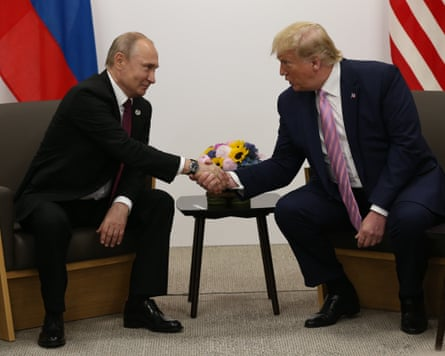
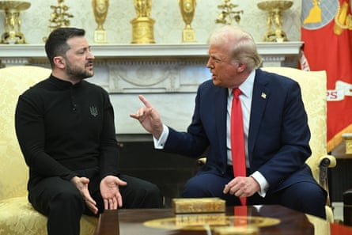
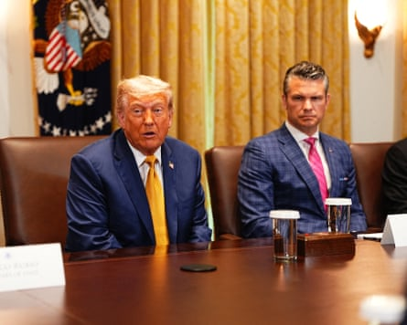

“I ’m not happy with Putin. I can tell you that much right now,” Trump said, expressing his frustration with the Russian leader over the war in Ukraine. “ We get a lot of bullshit thrown at us by Putin … He’s very nice all the time, but it turns out to be meaningless.”
It may not have been Churchillian in oratorical flourish, and with Trump everything is capable of being reversed in hours, but possibly, just possibly, the rupture between Vladimir Putin and Donald Trump has happened. If so it is a transformatory moment, and a vindication for both Volodymyr Zelenskyy as he arrives in Rome for the annual Ukraine reconstruction conference and for those others, notably the British and the French governments, who have patiently helped the scales to fall from Trump’s eyes about Putin’s true intentions. At long last and after many false starts, the US president seems to have accepted he is unpersuadable on ending the war.
Trump and Putin at the G20 summit in Osaka, Japan, in 2019.Photograph: Mikhail Svetlov/Getty Images
With Trump the parting of the ways is unlikely to be complete, or permanent. Above all Trump’s disappointment in Putin may not translate into the kind of practical financial and support Ukraine and Europe has been seeking, but America First is no longer Russia First.
It has been a long process with many low points. In February it seemed as if the whole transatlantic alliance was on the brink of collapse, as Trump initiated direct talks with Putin, and ordered Ukraine to make concessions. On 19 February he echoed Kremlin talking points in a post to his Truth Social network that called Zelenskyy a “dictator” and warned him time was running out for Ukraine: “Think of it, a modestly successful comedian, Volodymyr Zelenskyy, talked the US into spending $350 Billion Dollars, to go into a War that couldn’t be won […] A Dictator without Elections, Zelenskyy better move fast or he is not going to have a Country left.”
A week later at the UN general assembly in New York, the US opposed a European-drafted resolution condemning Moscow’s invasion of Ukraine and supporting Ukraine’s territorial integrity – voting the same way as Russia , North Korea and Belarus.
Veteran UK diplomats were then left shaken when the US drafted and voted for a security council resolution that called for an end to the conflict but contained no criticism of Russia. The UK and France both abstained after their attempts to amend the wording were vetoed .
Trump and Zelenskyy in the Oval Office on 28 February.Photograph: Saul Loeb/AFP/Getty Images
Later that week came the televised blowup with Zelenskyy in the Oval Office, followed by the hasty embrace of the Ukrainian leader in London by Keir Starmer and King Charles. The Russian foreign ministry spokesperson, Maria Zakharova, cheered on the White House from Moscow. “How Trump and Vance exercised restraint and didn’t punch this scumbag is a miracle of restraint,” she posted on Telegram.
All the while US negotiator Steve Witkoff revealed a depth of ignorance about the history of Ukraine and a sympathy with Putin’s claims the war had been provoked. Frequently he tipped over from trying to understand the Russian perspective into siding with it. In an interview with Tucker Carlson that truly alarmed European diplomats, Witkoff asked: “Why would they want to absorb Ukraine? For what purpose, exactly? They don’t need to absorb Ukraine. That would be like occupying Gaza … But the Russians also have what they want. They’ve gotten – they’ve reclaimed these five regions. They have Crimea, and they’ve gotten what they want. So why do they need more?”
Witkoff also delivered a portrait commissioned by Putin of a bloodied Trump, fist-clenched, after last year’s assassination attempt. Putin revealed he had prayed for Trump, and on 14 June he remembered the president’s birthday with a phone call.
Yet by the end of March Trump’s frustrations with Putin started to show as the Russian leader refused to commit to the 30-day ceasefire he had proposed and that Ukraine had quickly accepted. On 1 April the Finnish president, Alexander Stubb, returned from eight hours playing golf with Trump to report for the first time that he was losing patience with Russia.
Still, even by the end of May it was clear that the process of Trump’s patience wearing thin had an almost infinite quality. After fruitless diplomatic exchanges in Istanbul, continued evasions about a ceasefire and escalating strikes on Ukraine, Trump poured out his frustration on Truth Social warning that Putin was “playing with fire” and declaring in the Oval Office on 28 May that he would know within a fortnight if “Putin is tapping us along”.
Mid-June came, and still no change in strategy.
A confluence of events may however have tipped Trump in recent weeks. The Nato summit on 25 June was gift-wrapped by Europe as a triumph for Trump on defence spending, making him better disposed to listen to Europe’s security concerns. “There is a line between flattery and self-abasement, and we happily crossed it,” said one European diplomat.
The Nato secretary general, Mark Rutte, called Trump “Daddy”.
With his ego massaged, Trump sounded like a man less willing to be distracted by Putin. “I consider Putin a person that’s been misguided. I’m very surprised actually. I thought we would have had that war settled,” he told the media at the summit, revealing that Putin had called and offered to intervene with Iran.
“I said: ‘No, no, you help me get a settlement with you, with Russia,’ and I think we are going to be doing that.”
But the next call between the two on 4 July did not go well either, and it seemed as if Putin had determined he could extract more by war than by keeping Trump sweet. The Kremlin was uncompromising: “Our president said that Russia will achieve its goals, that is, the elimination of the well-known root causes that led to the current state of affairs,” said Yuri Ushakov, a close adviser to the Russian leader. “Russia will not back down from these goals.”
The deadly nightly Russian assaults on Ukraine (the UK foreign secretary, David Lammy, said Russia had launched 20,000 drone strikes this year) could not be kept from US screens and, finally, Trump was not happy when it emerged last week that the Pentagon was withholding a shipment of arms earmarked for Ukraine and no one informed the White House. The defence secretary, Pete Hegseth, looked distinctly uncomfortable.
Trump was not happy when it emerged that the Pentagon was withholding a shipment of arms earmarked for Ukraine and no one informed the White House. The defence secretary, Pete Hegseth, looked distinctly uncomfortable.Photograph: Abaca/Shutterstock
For Ukraine’s supporters in Congress and in Europe, the issue now is the extent to which Trump’s frustration with Russia transmits into practical support for Kyiv. The true test will come if the crushing sanctions tabled months ago by Republican senator Lindsey Graham are finally given presidential go-ahead. The measure would impose a 500% tariff on imports from any nation that purchases Russian uranium, gas or oil, with India and China the worst affected.
Lord Mandelson, the UK ambassador to the US, has been working behind the scenes to refine Graham’s blunderbuss so the proposed secondary sanctions do not catch European firms in their net.
Graham is now proposing a carve-out to his bill to spare countries who still import Russian gas, but have supported Ukraine in their three-year war with the Kremlin’s military. The bill also give Trump the right to waive sanctions on nations purchasing Russian oil or uranium for 180 days and, in its revised form, a second 180-day waiver is proposed.
“We’re moving,” Graham said after Trump’s diatribe against Putin, adding that Trump “told me it’s time to move so we’re going to move”. For Ukrainians on the frontline, they can only hope a turning point has come.